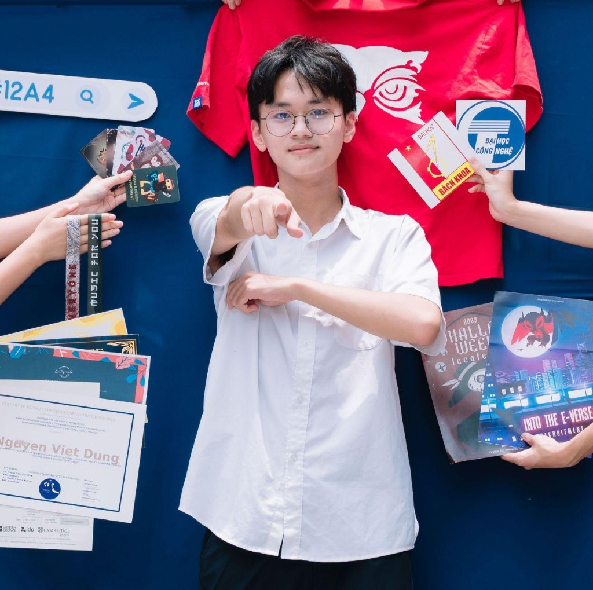

Nguyễn Việt Dũng
Ngành Hệ thống thông tinXin chào, mình là
Nguyễn Việt Dũng
Hiện đang là sinh viên lớp IS1 chuyên ngành Hệ thống thông tin. Mình đam mê khám phá các giải pháp công nghệ, phân tích và xử lý dữ liệu nghiệp vụ, cũng như thiết kế xây dựng các hệ thống thông tin tối ưu và thân thiện với người dùng.
Mục tiêu học tập & Định hướng cá nhân
- Học tập: Nỗ lực làm chủ các kiến thức cốt lõi về phân tích thiết kế hệ thống, cơ sở dữ liệu, quản trị mạng, lập trình ứng dụng, và phân tích dữ liệu kinh tế (Business Analytics).
- Định hướng: Hướng tới trở thành một kỹ sư Hệ thống thông tin hoặc chuyên viên phân tích nghiệp vụ (Business Analyst) có khả năng kết nối hiệu quả giữa giải pháp công nghệ và nhu cầu kinh doanh của doanh nghiệp.
Mục tiêu của Portfolio
- Hệ thống hóa toàn bộ các bài tập thực hành lớn về kỹ năng số (Digital Skills) đã được giảng dạy và thực hành trong học kỳ qua.
- Lưu trữ bài bản các sản phẩm cá nhân giúp dễ dàng truy cập, chia sẻ sản phẩm với giảng viên và xây dựng hồ sơ năng lực học tập uy tín.
- Rèn luyện kỹ năng phát triển sản phẩm web thực tế và tư duy bố cục thông tin trực quan.
Các Dự Án Đã Hoàn Thành
Tổng hợp đầy đủ các bài tập thực hành kỹ năng số và ứng dụng phần cứng/phần mềm trong học kỳ qua.
Hành Trình Đã Qua
Những đúc kết cá nhân, kỹ năng thực tế đạt được và thách thức đã vượt qua khi xây dựng Portfolio này.
Cảm nhận cá nhân
Quá trình thu thập lại các bài tập lớn từ bài phần cứng máy tính, khai phá dữ liệu, đến các ứng dụng AI và an toàn thông tin đã giúp mình củng cố một lượng kiến thức số đa chiều. Điều này cực kỳ bổ ích cho chuyên ngành Hệ thống thông tin mà mình đang theo đuổi.
Điểm mình tâm đắc nhất: Mình đã tự tay thiết kế và lập trình hoàn thiện giao diện portfolio này với phong cách Glassmorphism hiện đại, có khả năng phản hồi linh hoạt trên mọi kích thước màn hình và tích hợp chế độ chuyển đổi sáng/tối mượt mà.
Thách thức lớn nhất: Đó chính là việc chuẩn hóa dữ liệu báo cáo và thiết lập cấu trúc liên kết đám mây (Google Drive) sao cho người xem dễ tiếp cận nhất. Đồng thời việc căn chỉnh CSS thuần (Vanilla CSS) để tạo cảm giác chuyển trang mượt mà không cần dùng đến các thư viện cồng kềnh cũng đòi hỏi sự tỉ mỉ rất cao.